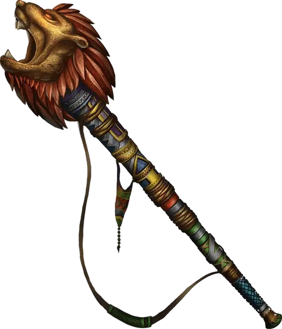

Рог взрыва
Horn of Blasting
Чудесный предмет, редкий

Рекомендованная стоимость 501-5 000 зм
Вы можете действием произнести командное слово рога и подуть в него, испуская взрыв 30-футовым конусом, слышимый на расстоянии 600 футов. Все существа в конусе должны совершить спасбросок Телосложения Сл 15. При провале существо получает урон звуком 5к6 и становится оглохшим на 1 минуту. При успехе существо получает половину урона и не становится оглохшим. Существа и предметы, изготовленные из стекла или кристаллов, спасбросок совершают с помехой и получают урон звуком 10к6, а не 5к6.
При каждом использовании магии рога существует 20-процентный шанс, что он взорвётся. Взрыв причиняет урон огнём 10к6 тому, кто в него дул, и уничтожает рог.